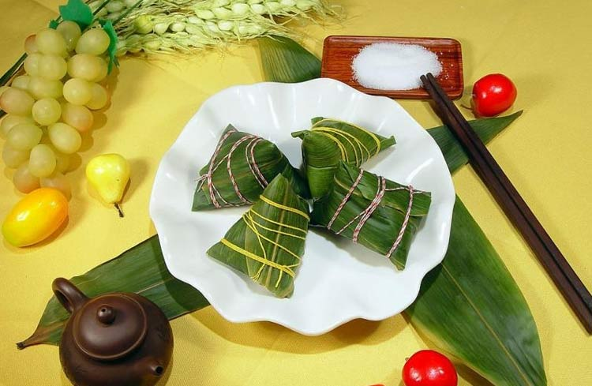

有多少人是被标题激怒进来想要殴打小编的？木哈哈哈哈……一看就是被“不转不是中国人”坑苦了的。不过话又说回来，同样都是伟人，马克思走了，给我们留下了背到口吐白沫的马克思主义和默写到手长老茧的论文试题，屈原走了，却给我们留下了3天假期……还是中国人心疼中国人啊！就冲着这情谊，难道还不该吃粽子吗？！
端午亦称端五，是我国最大的传统节日之一。“端”字有“初始”的意思，因此“端五”就是“初五”。而按照历法五月正是“午”月，由此“端五”也就渐渐演变成了“端午”。据《燕京岁时记》记载：“初五为五月单五，盖端字之转音也。
端午节始于春秋战国之际，关于其由来，说法不一。对于其起源的探讨，最早见于东汉末年的文献，迄今已有1800多年的历史。在这期间关于端午节的起源也是众说纷纭，不过到现在流传度、认可度最高的一个版本便是屈原。
时至今日，端午节仍是一个十分隆重的节日。过端午节是中国人二千多年来的习惯，但由于地域广大、人口众多，各地在发展过程中对节日进行了本地化的演绎，因此产生了不尽相同的习俗。习俗主要有："女儿回娘家，挂钟馗像，躲午，帖午叶符，悬挂菖蒲、艾草，游百病，佩香囊，备牲醴，赛龙舟，放风筝，比武，击球，荡秋千，吃五毒饼、咸蛋、粽子等。"
如果不吃粽子不是中国人的话，那不看赛龙舟也算……龙船竞渡前，先要请龙、祭神。如广东龙舟，在端午前要从水下起出，祭过在南海神庙中的南海神后，安上龙头、龙尾，再准备竞渡。并且买一对纸制小公鸡置龙船上，认为可保佑船平安。在划龙船时，又多有唱歌助兴的龙船歌流传。赤膊的精壮少年，喊着号子龙舟竞渡，激情活力值满格！相当值得看～
1、端午节到了，吃粽子、赛龙舟，好好过节吧；
2、2009年9月，联合国教科文组织正式审议并批准中国端午节列入世界非物质文化遗产，端午节真的是我们的！